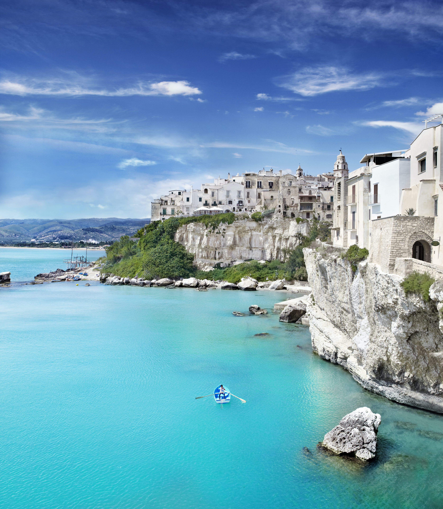
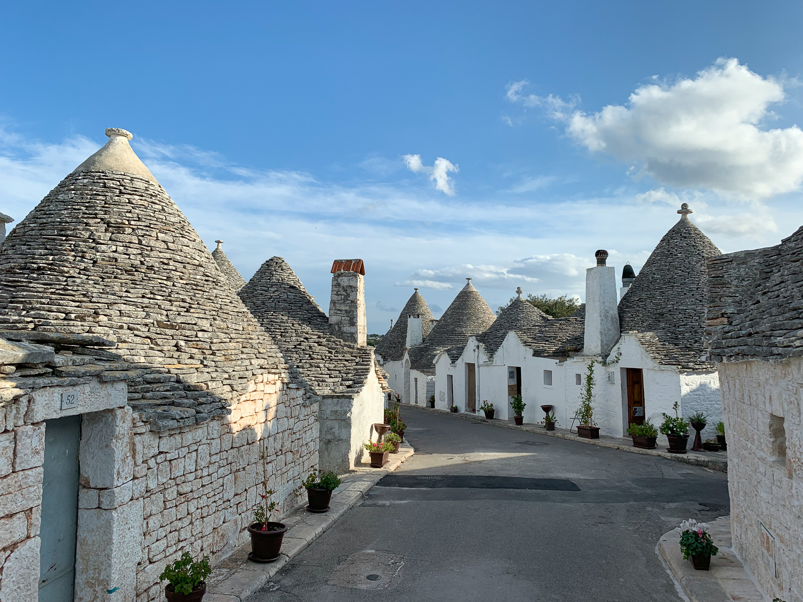
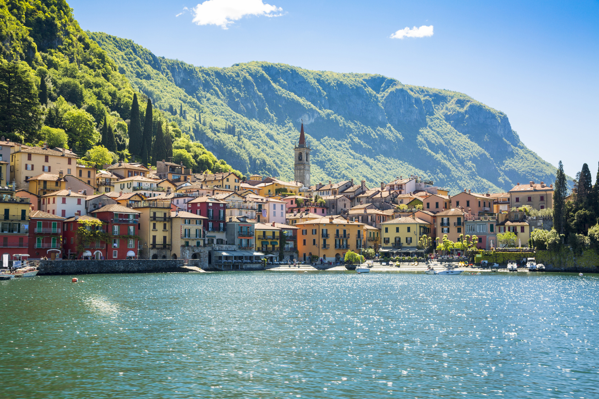
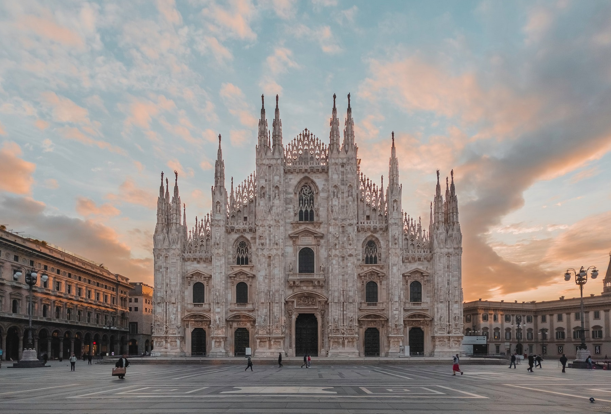
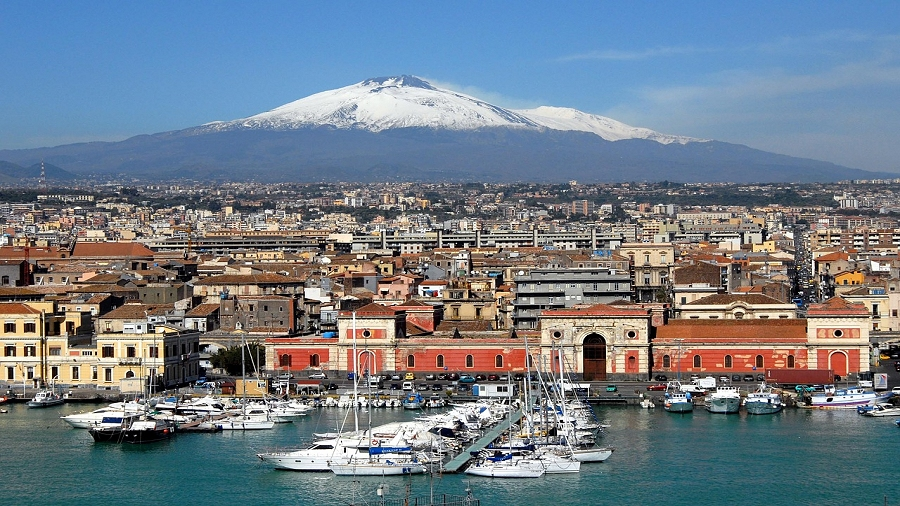

Włochy, Republika Włoska (wł. Italia, Repubblica Italiana) – państwo położone w Europie Południowej, głównie na Półwyspie Apenińskim, będące członkiem Unii Europejskiej oraz wielu organizacji, m.in.: ONZ, NATO, należące do siedmiu najbardziej uprzemysłowionych i bogatych państw świata – G7.
| Język urzędowy: | włoski |
|---|---|
| Stolica: | Rzym |
| Strefa czasowa: | UTC +1 – zima |
| UTC +2 – lato |
(wł. Puglia) – region administracyjny w południowych Włoszech, o powierzchni 19348 km², z ok. 4 milionami mieszkańców i stolicą w Bari (362,5 tys. mieszkańców). Gęstość zaludnienia 208 osób na km². Graniczy z Molise, Kampanią i Basilicatą.
Apulia to także kraina historyczna w starożytnej Italii, leżąca w południowo-wschodniej części Półwyspu Apenińskiego, wzdłuż wybrzeży Adriatyku. Głównym miastem regionu był dorycki Tarent.
Bari jest największym miastem nad Morzem Adriatyckim, ważnym ośrodkiem przemysłowym, handlowym i kulturalnym Włoch południowych. Duży port wojenny, handlowy i pasażerski utrzymuje połączenia promowe z miastami Czarnogóry, Chorwacji i Grecji. Rozwinięty przemysł stoczniowy i spożywczy (m.in. tradycyjne gałęzie – wytwórnie makaronów i win). Wielka rafineria ropy naftowej. Oprócz tego duże zakłady przemysłu maszynowego, samochodowego, cementowego, włókienniczego i stalowego.
Cały region Alberobello słynie z unikatowych form budownictwa – domów typu trulli, które są okrągłe i mają stożkowate dachy z kamienia. Tego typu domki wznoszono z uwagi na kwestie podatkowe. Swego czasu w Apulii pobierano podatki wyłącznie od solidnych, murowanych domów. Mieszkańcy trulli nie musieli więc uiszczać daniny.
Trulli wpisane zostały na Listę Światowego dziedzictwa UNESCO.
Kraina historyczna i region administracyjny w północnych Włoszech, między Szwajcarią na północy a rzekami: Pad na południu, Ticino na zachodzie, Mincio na wschodzie.
 Największa wyspa na Morzu Śródziemnym (ponad 25 tys. km²), położona we Włoszech na południe od Półwyspu Apenińskiego, od którego oddziela ją wąska Cieśnina Mesyńska. Od południa oddzielona Cieśniną Maltańską od Malty.
Najwyższym wzniesieniem na wyspie jest Etna (3323 m n.p.m.) – najwyższy aktywny wulkan na terenie Europy.
Informacja: Wszystkie zdjęcia oraz teksty opisujące Włochy oraz miasta zostały zaczerpnięte z Grafik Google oraz Wikipedii.